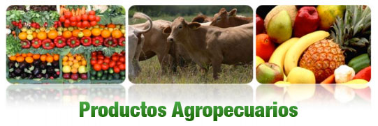
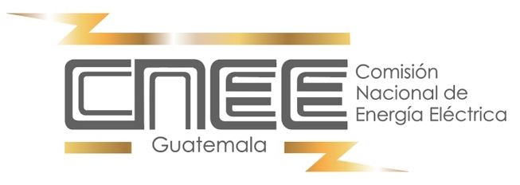
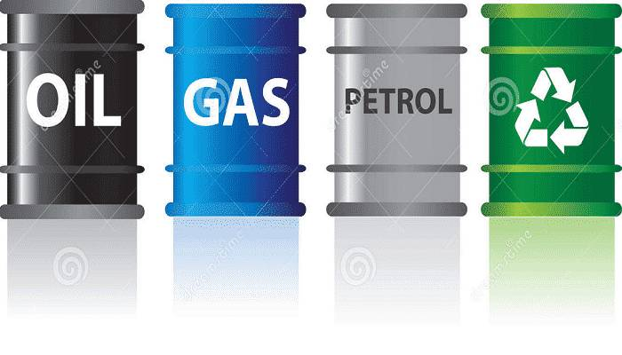
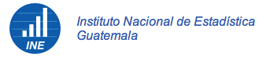
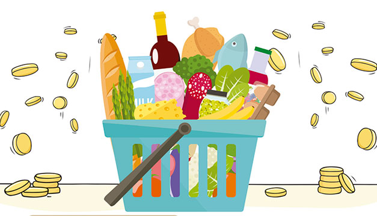

En este apartado se encuentran enlaces que te dirigirán a la página web oficial de entidades externas a -PFP-, dichas paginas te permitirán verificar el precio de un producto o servicio según el tema de tu interés.
A continuación, se encuentran organizados por tema: Productos agropecuarios, energía eléctrica, combustible, gas propano y canasta básica. Al escoger el tema, se abrirá una pestaña nueva con la información disponible.
|  | Consultar precios de frutas, verduras, carné y pollo, etc. |
 | Consultar tarifas de energía eléctrica EEGSA, DEORSA, DEOCSA y Empresas Eléctricas Municipales a nivel Nacional |
|  | Consultar precios de gasolina, diésel y gas propano |
 |  | Consultar precios de leche, huevos, carne, cereales, verduras, frutas, legumbres y otros artículos como la sal o el café |
||